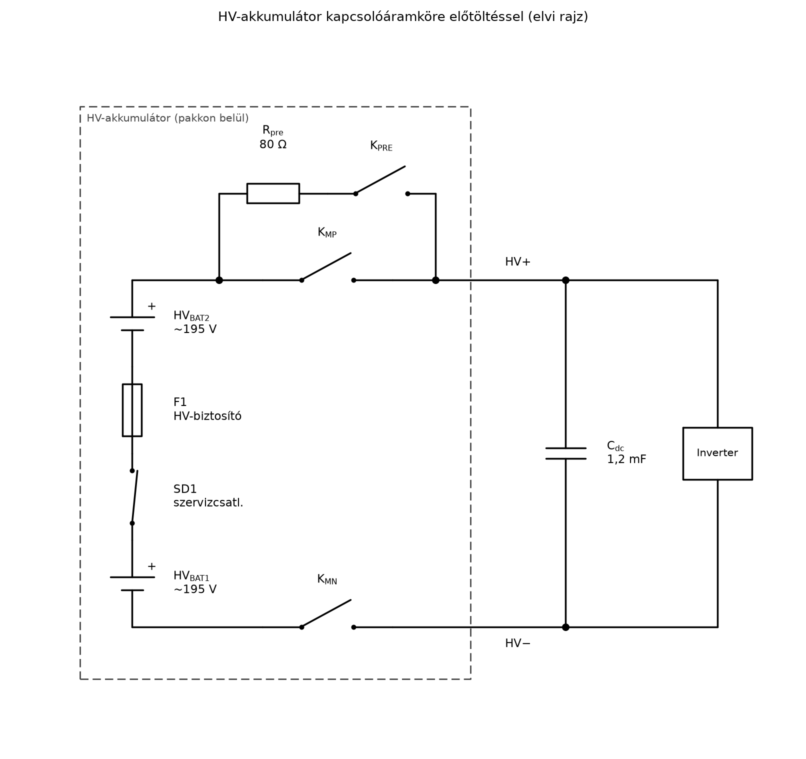

Hibrid vagy elektromos jármű érkezik a műhelybe, és a vezető azt mondja: „a kocsi nem akar elindulni, csak beveszi a fokozatot, de nem hajt, és feljött valami akkumulátoros hibaüzenet.” A rendszerteszter a hajtáslánc-vezérlőből nemcsak motorkódot, hanem a nagyfeszültségű (HV) akkumulátorra, a BMS-re (battery management system), a kontaktorokra vagy a szigetelésfigyelésre utaló hibakódokat is olvashat. Ha a szerelő nem érti a cellák, modulok és a biztonsági kapcsolóáramkör felépítését, akkor nem tudja eldönteni, hogy egy cella, egy érzékelő, egy kontaktor, vagy éppen a hűtőrendszer hibás-e. Ez az alfejezet ezért a cellától a teljes akkumulátorrendszerig vezet: megismerjük a Li-ion cellákat, a soros–párhuzamos kapcsolást, a BMS feladatait, a HV-kontaktorokat, az előtöltést és a hőmenedzsmentet.
Képzeljünk el egy elektromos személyautót, amelynél a HV-akkumulátor a padlólemez alatt, az első és hátsó tengely között helyezkedik el. Az alumínium házban több modul sorakozik, mindegyikben több, sorba kötött Li-ion cella. A cellák kék vagy ezüst fóliába, illetve prizmatikus dobozba zárt egységek, közöttük hűtőlemezek futnak, amelyeken folyadék kering. A pakk oldalán narancssárga HV-kábelek vezetnek a hajtásinverterhez, elöl pedig egy narancssárga szervizcsatlakozó (service disconnect) található, amely feszültségmentesítéskor kézzel eltávolítható. A pakk tetején, kis árnyékolt kábelezéssel a BMS mérővezetékei futnak a cellafeszültség- és hőmérséklet-érzékelőkhöz. A pakk elején külön dobozban vannak a fő kontaktorok, az előtöltő ellenállás, a HV-biztosító és a mérőérzékelők.
Definíció. HV-akkumulátor (high-voltage traction battery): a hibrid vagy elektromos jármű hajtási energiáját tároló, narancssárga jelöléssel ellátott, több száz voltos egyenfeszültségű akkumulátor. A „HV” itt a járműtechnikai nagyfeszültséget jelenti, nem a hálózati épületvillamossági feszültségszinteket.
Definíció. Cella, modul, pakk. A cella a legkisebb elektrokémiai egység. A modul több cella mechanikailag és elektromosan összekapcsolt csoportja, jellemzően kerettel, hűtőlemezzel és érzékelőkkel. A pakk a modulok, hűtőelemek, érzékelők, kontaktorok, biztosítók és BMS közös házba szerelt, járműbe építhető rendszere.
Definíció. BMS (battery management system): az akkumulátor villamos, hő- és biztonsági állapotát felügyelő elektronikus rendszer.
Összefüggés. A soros és párhuzamos cellaösszeköttetésből a pakk feszültsége, kapacitása és energiája:
ahol a soros cellák száma, a párhuzamos cellák száma, a cella névleges feszültsége, a cella kapacitása (Ah), a pakk energiája (Wh). A pakk kapacitását amperórában párhuzamos kapcsolás növeli, feszültségét soros kapcsolás.
Definíció. SoC (state of charge) a töltöttségi szint, SoH (state of health) az egészségi állapot. Képlettel:
ahol a még kivehető töltésmennyiség, a névleges kapacitás, a jelenlegi, az új állapotban mért kapacitás. A gyakorlatban a SoH-t a kapacitáscsökkenés és a belső ellenállás növekedése együttesen jellemzi.
Definíció. HV-kontaktor (contactor): nagyfeszültségű egyenáramú relé, amely a HV-akkumulátor pozitív és negatív pólusát a jármű hajtásrendszeréhez kapcsolja. Előtöltő ellenállás (precharge resistor): a fő kontaktor zárása előtt a DC-köri kondenzátort korlátozott árammal feltöltő ellenállás. Szervizcsatlakozó (service disconnect): a mechanikai leválasztást lehetővé tevő, általában narancssárga reteszelt elem, amely kiveszése megszakítja a cellák közötti áramkört. Szigetelésfigyelés: a HV+ és HV− vezetékek test (karosszéria) felé mért szigetelési ellenállásának folyamatos vagy időszakos ellenőrzése.
A hajtásakkumulátorokban ma elsősorban lítiumion (Li-ion) cellákat használunk. Két elterjedt katódkémia:
| Jellemző | NMC (nikkel-mangán-kobalt) | LFP (lítium-vas-foszfát) |
|---|---|---|
| Névleges cellafeszültség | kb. 3,6–3,7 V | kb. 3,2–3,3 V |
| Energiasűrűség | nagyobb | kisebb |
| Biztonsági viselkedés | érzékenyebb | stabilabb |
| Tipikus alkalmazás | személyautó | busz, teherszállító, energiatároló |
Az értékek tanulási példák (ellenőrizendő: gyártói adat).
Cellák kialakítás szerint lehetnek hengeres (pl. 18650, 21700 méretjelölés), prizmatikus (sík oldalfalú fém doboz) vagy pouch (fóliatasakos, párnázott) cellák. A járműpakkokban a párhuzamosan kötött cellacsoportokat gyakran egy cellának tekintik (pl. 3 db 50 Ah-s pouch párhuzamosan = 150 Ah-s cellacsoport), mert elektromos szempontból ugyanúgy viselkednek.
A pakk jelölése általában nsnp alakú, például
96s2p: 96 soros cellacsoport, csoportonként 2 párhuzamos
cella. A soros kapcsolás növeli a feszültséget, a párhuzamos kapcsolás
növeli az amperóra kapacitást és a terhelhetőséget. A soros füzért
stringnek is nevezzük. Egy nagyobb személyautó-pakk
jellemzően 96–108 soros cellacsoportból áll, így a névleges feszültség
350–450 V körül van; egyes tehergépjármű-rendszerek 600–800 V-osak
(ellenőrizendő: típus szerint).
A modul feladata a soros string szakaszokba osztása, a mechanikai rögzítés, a hűtőlemezekkel való érintkezés és a BMS-mérések bekötése. A modulok egymáshoz csavarozott, rugalmas vagy sínezett összekötőkkel csatlakoznak; minden modulnál kivezetnek a cellafeszültség-mérő vezetékek és a belső hőmérséklet-érzékelők.
A rajzon a cella–modul–pakk szintek egymásra épülése követhető: a cellacsoportokat sínek kötik sorba, a modulok a hűtőlapon ülnek, a kapcsolódobozban vannak a kontaktorok és az előtöltés elemei, a szervizcsatlakozó pedig a fedélen át hozzáférhető. Az interaktív változatban a lejátszás pakk → modul → cella sorrendben „szedi szét” az akkumulátort, rámutatásra az elem neve jelenik meg, a kalkulátor pedig a soros és párhuzamos cellaszámból és a cellaadatokból kiszámítja a pakkfeszültséget, a kapacitást és az energiát (alapérték: az 1. példa 96s2p pakkja).
A BMS a HV-akkumulátor „felügyeleti központja”. Feladatai:
A cellák önmagukban is veszélyes feszültséget adnának, ezért a járműhöz csak zárt kontaktorokon keresztül kapcsolódnak. A pakk pozitív és negatív kivezetésén egy-egy fő kontaktor, valamint egy előtöltő ág található. Az alábbi elvi ábra ezt mutatja:

A rajzon a
és a
a cellasor két felét, SD1 a szervizcsatlakozót (a cellasor
közepén, sorosan, a HV-biztosítóval, F1), a szaggatott
keret a pakk határát, K_MN a negatív fő kontaktor,
K_MP a pozitív fő kontaktor, K_PRE és
R_pre az előtöltő ág, C_dc pedig az inverter
DC-köri kondenzátora. Az alapállapotban a kontaktorok nyitva vannak,
ezért a csatlakozón kívül nincs feszültség a jármű HV-kábelezésén.
Bekapcsoláskor a vezérlő először a negatív fő kontaktort
(K_MN) zárja, majd az előtöltő kontaktort
(K_PRE) zárja, hogy a C_dc kondenzátor az
R_pre ellenálláson keresztül korlátozott árammal töltődjön.
Amikor a DC-köri feszültség eléri a pakkfeszültség 90–95%-át, a vezérlő
zárja a pozitív fő kontaktort (K_MP), majd az előtöltő
kontaktort elengedi. Előtöltő ellenállás nélkül a kondenzátor üres
állapotban gyakorlatilag rövidzárként viselkedne, és az áramlökés a
kontaktorokat összehegeszthetné, a biztosítókat kinyithatná.
A HV-rendszerben a szervizcsatlakozó mellett gyakran olvadóbiztosító (HV-biztosító) és gyakran pirotechnikai leválasztó (pyro fuse) is van. Ez utóbbit ütközéskor a légzsák-vezérlő (egyes típusoknál a BMS is) gyújtójellel oldja ki: egy kis töltet mechanikusan elvágja a vezetőt, és gyorsan megszakítja az akkumulátor áramkörét. Pirotechnikai elemként ellenállásmérővel mérni tilos, a kioldott és a ki nem oldott egységet a gyártói előírás szerint kell kezelni (ellenőrizendő: gyártói adat). A szigetelésfigyelés a HV+ és HV− test felé mért ellenállását méri; ha az érték a megengedett határ alá esik, a vezérlő hibát tárol és leválasztja a rendszert.
HV-biztonság. HV-rendszeren csak arra kiképzett, jogosult személy dolgozhat a gyártói eljárás szerint. A feszültségmentesítés lánca: jogosultság és EVE ellenőrzése (szigetelő kesztyű légnyomásos próbája, arcvédő), a munkaterület lezárása és jelölése, gyújtás ki, kulcs távol, 12 V lekötése, szervizcsatlakozó eltávolítása és visszakapcsolás elleni biztosítása, gyártói várakozási idő, a feszültségmentesség ellenőrzése megfelelő mérési kategóriájú (pl. CAT III, ellenőrizendő) műszerrel, amelyet előtte és utána ismert feszültségforráson ellenőrzünk, végül dokumentálás. A megadott értékek tanulási példák (ellenőrizendő: gyártói javítási utasítás).
A Li-ion cellák a 20–40 °C közötti tartományban működnek a legjobban. Hidegen a töltés (lítiumkiválás veszélye) és a nagyáramú kisütés korlátozott, melegen gyorsul az öregedés és nő a hőmegfutás kockázata. A HV-akkumulátorokat ezért folyadékhűtés (hűtőlemezek, hűtőközeg-víz/glykol keverék) vagy ritkábban levegőhűtés, és fűtőbetét/hőszivattyú hűtőkör tartja az ideális hőmérsékleten. A BMS a hőmérsékletjelek alapján kéri a hűtőközeg-szivattyú és a hűtőventilátor teljesítményét, illetve a fűtést.
Az öregedés két fő megjelenési formája: a kapacitáscsökkenés (ciklikus és naptári öregedés) és a belső ellenállás növekedése. A nagy töltőáram, a magas hőmérséklet, a 100%-os töltöttségen tartás, a mélykisütés és az egymástól eltérő cellaterhelés gyorsítja. A hőmegfutás (thermal runaway) ritka, de életveszélyes állapot: belső rövidzár, mechanikai sérülés vagy túltöltés következtében a cella hőmérséklete öngerjesztő módon emelkedik, gázok, füst, láng keletkezhet. A BMS ezért több független védelmi szintet alkalmaz: cellafigyelés, kontaktorleválasztás, pyro fuse, feszültség- és hőmérséklet-határok.
Környezetvédelem. A Li-ion HV-akkumulátor életciklusa végén értékes másodnyersanyag-forrás, de veszélyes hulladékként kezelendő. Sérült, feszült cellás akkumulátort nem szabad szétszerelni, tűzveszélyes állapotban a gyártói mentési adatlap szerint kell tárolni. A bontásnál és újrahasznosításnál a hulladékstátuszú akkumulátorokat a hatályos hazai és uniós hulladékszabályozás szerint, engedéllyel rendelkező kezelőnek kell átadni (ellenőrizendő: hatályos hulladékjogszabály).
Adott: NMC cella névleges feszültsége , kapacitása ; elrendezés , azaz , .
Keresett: a pakk feszültsége, amperóra-kapacitása és energiája kWh-ban.
Képlet: , , .
Behelyettesítés: , , .
Ellenőrzés: a 3,65 V és a 4,0 V közötti cellafeszültségeknél 350–400 V, ami a személyautós HV-osztályba illik. A kapacitás 116 Ah, az energia 40 kWh nagyságrendű, ami egy kisebb elektromos autóra reális.
Adott: , , .
Keresett: a bekapcsolás pillanatában a legnagyobb előtöltő áram, az előtöltő időállandó, a feltöltés kb. 5 időállandónyi ideje, és a kondenzátor végső energiája.
Képlet: , , , .
Behelyettesítés: , , , .
Ellenőrzés: 4,9 A csúcsáram sokkal kisebb, mint a fő kontaktor közvetlen zárásánál fellépő, több száz A-t is elérő áramlökés; az időállandó 0,1 s alatti, a teljes előtöltés fél másodperc alatt lejátszódik. A 91 J energia a kondenzátorban tárolt energia, amely kis kontaktoroknál is biztonságosan kezelhető, de a DC-kör feszültség alatt még veszélyes lehet.
A diagnosztikai gyakorlatban a BMS élő adatai alapján ellenőrizhető:
A szigetelés- és alkatrészméréseket (nem a BMS élő adatainak olvasását) csak a gyártói feszültségmentesítés után, megfelelő mérőműszerrel, jogosult személynek szabad végezni.
Előírás. A nagyfeszültségű járművek elektromos biztonságára az UNECE ECE R100 előírás vonatkozik; a HV-rendszeren dolgozó személyzet képesítési szintjeit a hatályos hazai jogszabályok szabályozzák. A HV-akkumulátor szigetelési ellenállására és leválasztó eszközeire a gyártói javítási adat és az ECE R100 szerinti ellenőrzés az irányadó (ellenőrizendő: hatályos előírás).
Valós eset. Egy hibrid személyautó a hajtás bekapcsolásakor csak a „Készenléti üzem nem elérhető, HV-rendszer hiba” üzenetet jeleníti meg. A rendszerteszter a hibrid hajtáslánc-vezérlőben „előtöltési idő túllépés” hibát tárol. Élő adatban az akkumulátorfeszültség 385 V, de a DC-link feszültség a bekapcsolási kísérletnél csak 112 V-ig emelkedik, és ott megáll, majd a rendszer visszanyitja a kontaktorokat.
Hipotézis: az előtöltő ág ellenállása megnőtt, vagy a DC-link kondenzátor hibás. A jogosult szerelő a gyártói feszültségmentesítés után, a narancssárga HV-kábelt leválasztva, az előtöltő ellenállást méri: a névleges 80 Ω helyett kb. 280 Ω-ot mutat a multiméter; a DC/DC átalakító már a bekapcsolás alatt terhel (kb. 110 Ω egyenértékű terhelés), ezért a DC-link feszültsége V körül megáll, ami az észlelt 112 V-hoz közeli érték. A kondenzátor kapacitásmérése a csatlakozón 1,18 mF, tehát az jó. Az előtöltő ellenállás cseréje után a vezérlő próbája sikeres: a DC-link feszültség 0,4 s alatt eléri a 385 V 95%-át, a fő kontaktor zár, a jármű készenlétbe kapcsol.
Tanulság: a BMS a hibát nem mindig a konkrét alkatrészre lokalizálja; a szerelőnek a mérési értékekből kell visszavezetnie a meghibásodást. A HV-rendszeren végzett munka előtt a feszültségmentesítés lépéseit mindig a gyártói eljárás szerint, méréssel igazolva kell elvégezni.
Biztonsági korlát. A fenti diagnosztika tanműhelyi környezetre, oktató felügyeletére és a gyártói javítási utasítás betartására vonatkozik; a megadott mérési értékek tanulási példák.
1. feladat (A). Egy LFP cella névleges feszültsége 3,20 V, kapacitása 100 Ah. Sorba kötünk 108 cellát, párhuzamosan nem. Számítsd ki a pakk feszültségét, kapacitását és energiáját kWh-ban.
2. feladat (A). Röviden definiáld a SoC és a SoH különbségét! Melyik jellemző utal a jármű töltöttségi szintjére, és melyik az akkumulátor elöregedésére?
3. feladat (B). Egy NMC pakk 96s3p elrendezésű. A cella névleges feszültsége 3,65 V, kapacitása 52 Ah. Mekkora a pakk feszültsége, amperóra-kapacitása és energiája? Hasonlítsd össze a 96s2p, 58 Ah-s pakkal: melyiknek nagyobb az energiája?
4. feladat (B). A HV-akkumulátor kapcsolási rajzán
(fenti diagram) írd le a kontaktorok bekapcsolási
sorrendjét, és indokold, miért nem a pozitív fő kontaktor zár
először!
5. feladat (C). Egy használt HV-pakkban 96 soros cellacsoport van. A BMS adatai szerint a 17. cellacsoport kapacitása csak 80%-a a többinek, és a feszültsége terhelt állapotban gyorsan esik. Magyarázd el, miért csökkenti ez a leggyengébb cellacsoport a teljes pakk használható kapacitását, és milyen BMS funkció védi a rendszert!
6. feladat (D). Egy elektromos autó nem kapcsol készenlétbe. A rendszerteszter a BMS-ből a következő élő adatokat mutatja: a cellafeszültségek 3,58–3,61 V között egyenletesek; a modulhőmérsékletek 28–32 °C; a szigetelési ellenállás HV+–test 480 kΩ, HV−–test 490 kΩ; a bekapcsolási kísérletnél a DC-link feszültség 0,02 s alatt eléri a 385 V-ot. A BMS viszont túláram-eseményt rögzített. Melyik alkatrészre gyanakszol, és hogyan ellenőrzöd?
Önellenőrzés – válaszok
1. feladat (A). Adott: , , , . Keresett: , , . Képlet: , , . Behelyettesítés: ; ; .
2. feladat (A). SoC a még elérhető töltés aránya a névleges kapacitáshoz; SoH az aktuálisan mérhető kapacitás aránya az új állapothoz. Elöregedésre a SoH utal, pillanatnyi töltöttségre a SoC.
3. feladat (B). 96s3p: ; ; . Az 1. példa 96s2p 58 Ah-s pakkja volt, tehát a 96s3p 52 Ah-s pakk energiája nagyobb, mert a három párhuzamos cella 156 Ah-t ad.
4. feladat (B). Bekapcsoláskor először
K_MN zár, majd K_PRE zár; az
R_pre korlátozott árammal feltölti C_dc-t.
Amikor C_dc feszültsége eléri a pakkfeszültség 90–95%-át,
zár K_MP, majd K_PRE nyit. A pozitív fő
kontaktor nem zárhat először, mert az üres kondenzátor rövidzárszerű
áramlökést okozna, ami a kontaktorokat és a biztosítót károsítaná.
5. feladat (C). Soros kapcsolásban ugyanaz az áram folyik át minden cellacsoporton, ezért a leggyengébb, 80%-os kapacitású cellacsoport éri el először a teljes lemerülést vagy a teljes feltöltést. A pakk kapacitása így a leggyengébb elemhez igazodik. A BMS cellafeszültség-figyeléssel és kiegyenlítéssel, szükség esetén teljesítménykorlátozással védi a gyenge cellát a túlmerüléstől, de a kapacitáscsökkenést kiegyenlítés nem tudja visszanyerni.
6. feladat (D). A cellafeszültségek és a hőmérsékletek kiegyenlítettek, a szigetelési ellenállás jó. A DC-link feszültség 0,02 s alatt eléri a 385 V-ot, ami túl gyors, tehát az előtöltő ág nem korlátoz. Túláram-esemény és azonnali feszültségfelugrás a fő pozitív kontaktor hibájára vagy az előtöltő ellenállás rövidzárjára utalhat. Ellenőrzés: feszültségmentesítés után az előtöltő ellenállást mérni (pl. névleges 80 Ω helyett 0 Ω rövidzár vagy a fő kontaktor érintkező beragadva). A fő kontaktor ki-bekapcsolását is tesztelni kell. A hibás alkatrészt a gyártói előírás szerint kell cserélni.
A HV-akkumulátor a hibrid és elektromos járművek hajtási energiaforrása: cellákból, modulokból és pakkból épül fel. A Li-ion cellák leggyakrabban NMC (3,6–3,7 V, nagyobb energiasűrűség) vagy LFP (3,2–3,3 V, stabilabb) kémiájúak, hengeres, prizmatikus vagy pouch kivitelűek. Soros kapcsolás növeli a feszültséget, párhuzamos kapcsolás a kapacitást: , , . A BMS felügyeli a cellafeszültséget, hőmérsékletet, kiegyenlítést, SoC/SoH-t, és védelmet ad túlfeszültség, mélykisülés, túláram, hőmegfutás ellen. A HV-kapcsolóáramkör fő kontaktorokat, előtöltő ellenállást, szervizcsatlakozót, pyro biztosítót és szigetelésfigyelést tartalmaz. Az előtöltő ellenállás a DC-kondenzátort korlátozott árammal tölti fel, mielőtt a fő pozitív kontaktor zár. A hőmenedzsment 20–40 °C közötti cellahőmérsékletet tart, az öregedést kapacitáscsökkenés és belső ellenállás-növekedés jellemzi.
Továbbvitt eredmény. A cella, modul, pakk felépítése, a BMS feladatai, valamint a HV-kontaktorsor és az előtöltés működése közvetlenül szükséges a(z) Villamos hajtás: villanymotor, inverter, DC/DC átalakító, regeneratív fékezés és hőmenedzsment alfejezetben az inverter DC-köri kondenzátora és az energiamenedzsment, valamint a(z) HV-veszélyek, jogosultság és munkaszervezés alfejezetben a HV-rendszer leválasztásának megértéséhez.